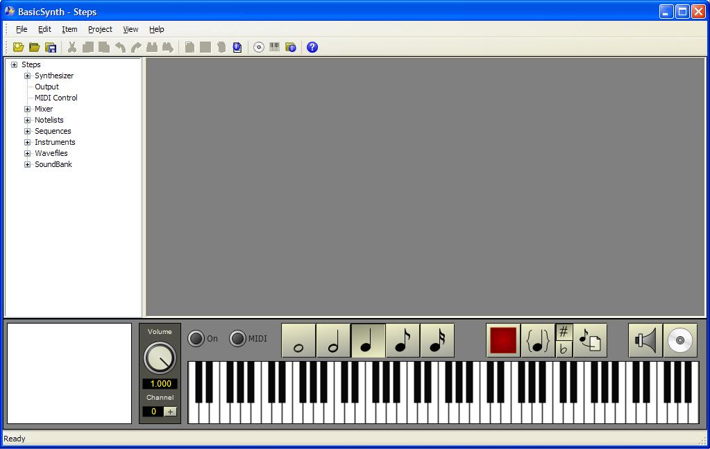

Select File->New Project from the main window menu. A standard file browser is displayed. You can use any folder to store projects, but it is a good idea to put each project in a separate folder. Create a new folder for the project, select that folder, and then enter Steps.bsprj in the file name box. Press OK to close the file browser. An empty project will be created. Because this is a new project, the project properties form is automatically opened.

Enter a name for the project (Steps). The name will appear at the top of the project viewer window and on the title bar. You can also fill in the Author, Copyright, and Description fields. These are optional. For now, leave the remaining entries at their defaults. Press OK to close the form. You can open the project properties form at any time by right-click on the project name and then select the Properties entry on the pop-up menu. However, after the project has been created you should not change the project file path. To rename the project file, use the File->Save Project As entry on the main menu.
The main window now shows a tree view of the project items on the left and a piano keyboard at the bottom of the screen.
You can hide or show the toolbar, status bar, tree view and keyboard using the View menu.
Each entry in the tree represents a different part of the project:
Top level tree items can be hidden, and additional tree items can be added, using the project options dialog.
Almost all functions in BasicSynth Composer are available as pop-up context menus on the tree view items. To access the menu, right-click on a project item. Commonly used functions are also duplicated on the toolbar below the main menu. Each project item has a properties form that allows you to enter name, optional description, and item specific information. To access the properties for an item, right-click on the item and select Properties from the pop-up menu. Alternatively, you can select an item and then click the properties page icon on the toolbar.
The bottom of the window contains a virtual keyboard to preview sounds and also enter notes by clicking on the keys with the mouse. For a full description of the keyboard, see Keyboard/Player
Editor windows are placed to the right of the project viewer. Score files are edited with a syntax-highlighted text editor. Instruments are edited with a specialized editor that allows direct entry of the instrument parameters using knobs, switches and buttons. Multiple editors can be opened at the same time. When a file or instrument is opened for editing a tab is added to the top of the edit frame. Clicking on a tab with the mouse will rotate the editor to the front.
Next: Create wavetables...